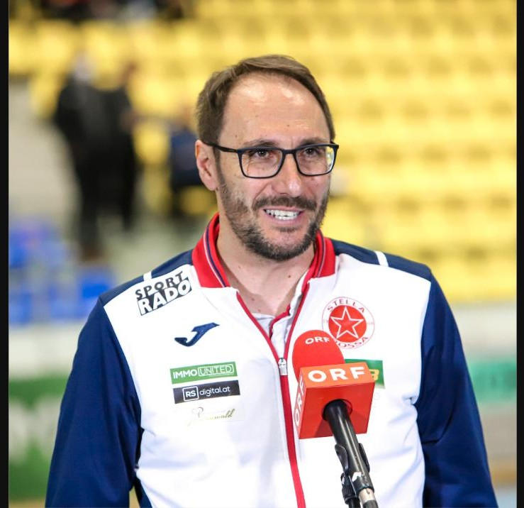
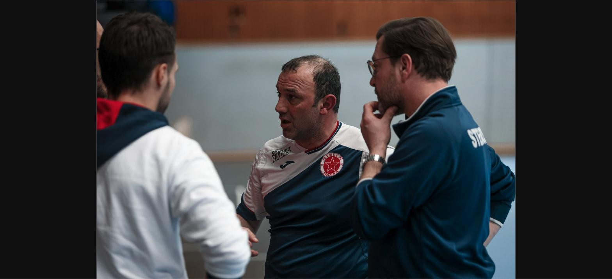
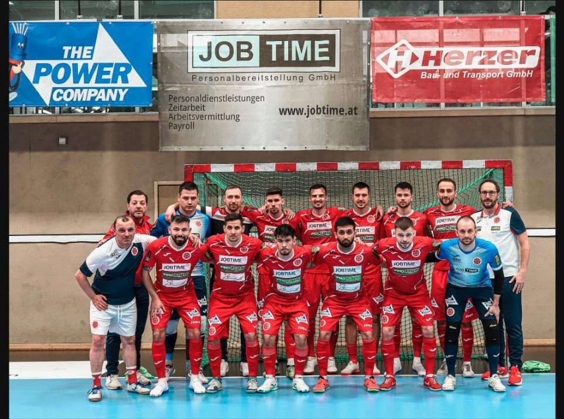
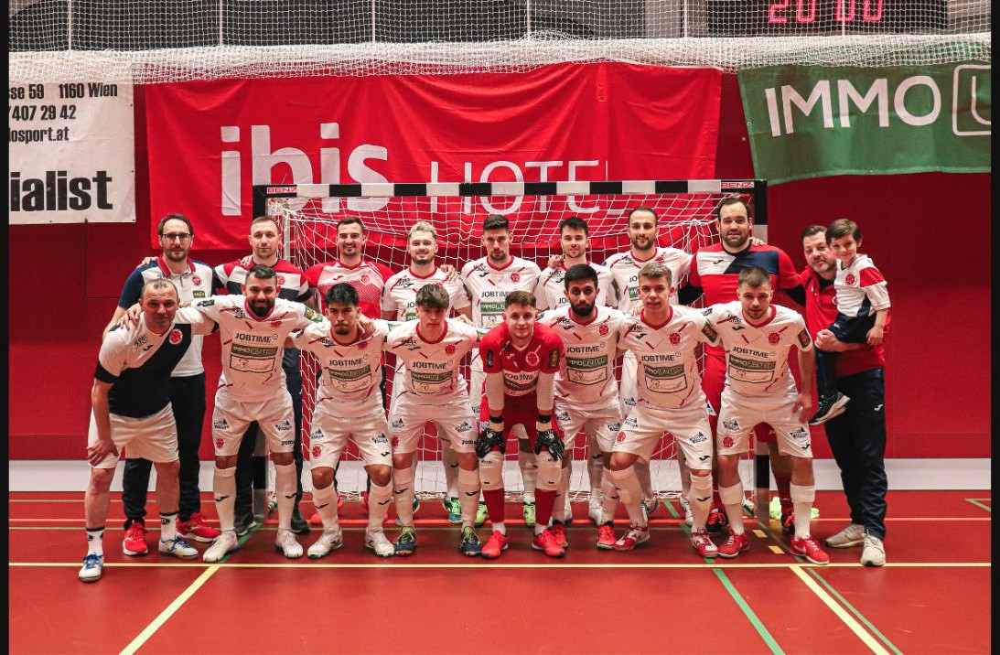
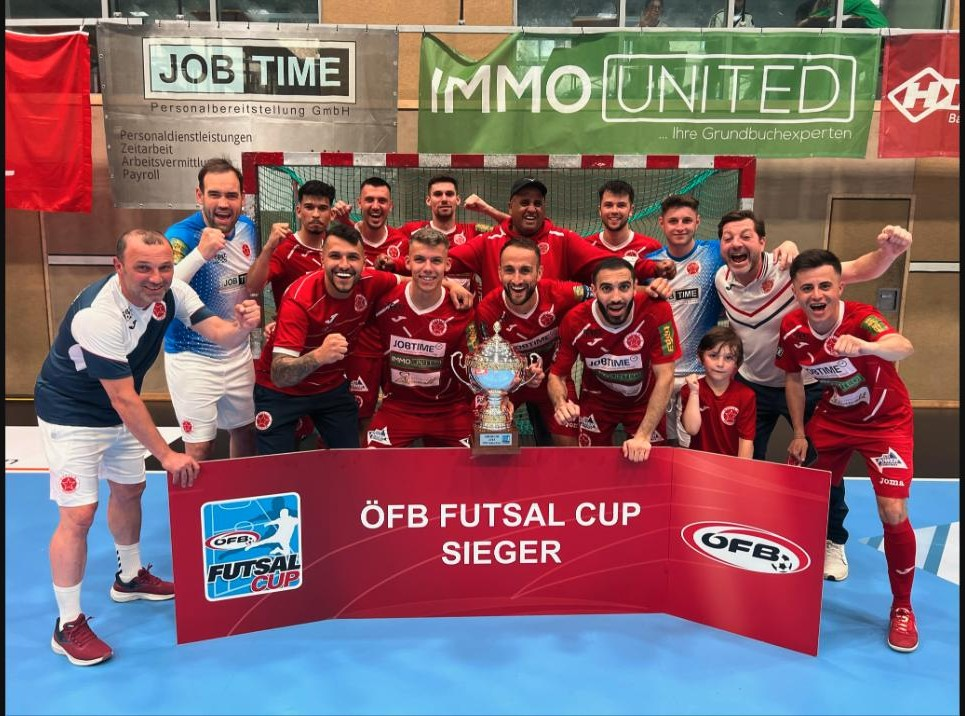
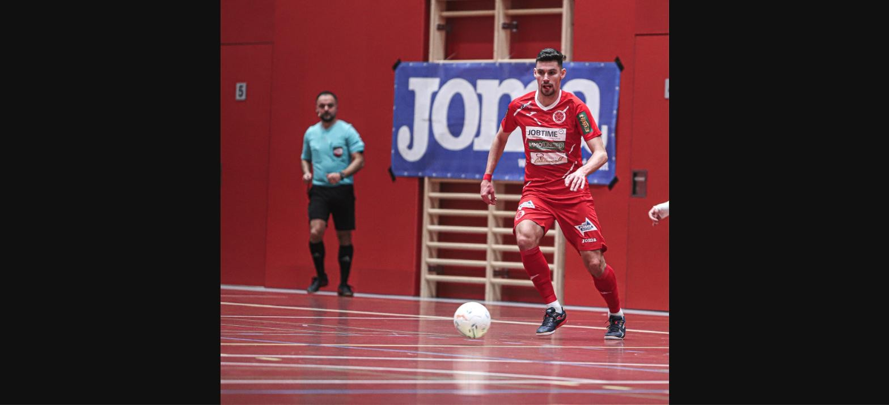
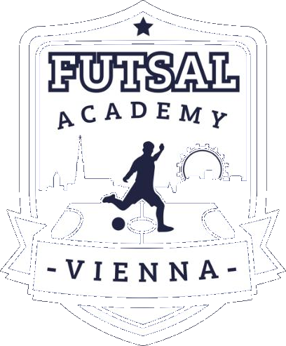

Vereinsgeschichte, Erfolge & Team
Futsal Rekordmeister
1991 erlebte Aleksandar Ristovski als Fan von Roter Stern Belgrad das Europapokalfinale in Bari, Italien, in dem das Team gegen Olympique Marseille gewann. Die Mannschaftsnamen waren auf Italienisch geschrieben, und er stieß erstmals auf den Vereinsnamen „Stella Rossa". Dieser Moment inspirierte ihn zur Gründung eines Streetsoccer-Vereins, der später zum Futsal-Verein „Stella Rossa" wurde.
Im Mai 1998 gegründet, spielt Stella Rossa seit 2005 ununterbrochen in der höchsten Futsal Liga Österreichs, die seit 2010 in den ÖFB integriert ist. Mit fünf Titeln darf sich Stella Rossa österreichischer Futsal Rekordmeister nennen, dreimal konnte sogar das Double aus Meisterschaft und Cupsieg geholt werden. Mehr als 30 Titel auf nationaler Ebene sowie fünf Teilnahmen an der UEFA Futsal Champions League machen Stella Rossa zum erfolgreichsten österreichischen Futsal Verein.
Das Trainerteam

Sportdirektor & Trainer
Aleksandar Ristovski

Tormanntrainer
Mamuka Tschitschinadze
Stella Rossa Mannschaften





Stella Rossa Nachwuchs
Die Futsal Academy Vienna hat es sich zum Ziel gesetzt, Kindern und Jugendlichen die Sportart Futsal näherzubringen. In den Trainingseinheiten werden durch Rondos und kleine Spielformen die Spielfähigkeit, Handlungsgeschwindigkeit, Entscheidungsfindung und Kreativität der Kinder und Jugendlichen verbessert.